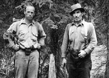
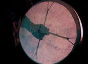
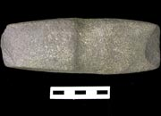
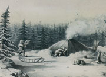

Storytelling: Crow Story
"The story of the Crow story is a long story. And no end...no end to that. I think you can’t finish [in] six months or something if you really know all the story. That’s how the world, that’s how the world, yeah, that’s how this world [is] set up. And when he fly from that place there he fly over to Fish Lake, Marsh Lake, down that way, all the way to Frances Lake. He fly all over [the] place, all this world. He put the fish in there, drop it, drop it, drop it, drop, that’s why all the fresh water fish. Yeah. He got that fish from Eagle. That’s why we got all kids of fish."
Johnnie Smith tells crow stories, 1998
YA, Yukon Archives fonds, 2009/9R, SR 270 (3)
Storytelling is a highly developed part of Yukon First Nations cultural heritage. For countless generations, stories have been used to explain and interpret their world. The stories teach lessons about resources and relationships, and they pass on information about events in the past. They illustrate themes that are central to peoples’ lives.
One of the most common stories describes how Crow created the world. Crow stories are linked to the Raven stories of the coastal peoples of Alaska. To Yukon First Nations people, Crow was responsible for the world taking on its present form. Crow was the creator, the trickster, the transformer. There are many different versions of the story of how Crow created the world. This version was told by Kwanlin Dun elder Johnnie Smith, son of Kitty Smith.
"That Crow, he does everything, teaches everything."
Kitty Smith (in Cruikshank: Dän Dhá Ts'edenintth'é/Reading Voices)
Continue to Kwäday Kwädän: Long Ago People"This is how he made world."
Kitty Smith: My Stories are My Wealth.
Click on images for larger view.
Geologists Hugh Bostock and Joe Winters, McQuesten Valley, 1930s. They are standing beside a stump cut with a stone axe.
YA, Hare collection #6985.
The traditional drum of Northern Tutchone musician Jerry Alfred.
Etsi Shon
A stone adze, as many as 1000 years old, found near a traditional fish camp. Although there are no written records before the mid-19th century, archeological evidence points to human occupation of the Yukon as long as 25,000 years ago.
Yukon Government
Sketch of a Gwich’in dome tent by Alexander Hunter Murray, drawn c.1850. Murray was a Hudson’s Bay Company trader who came to the Yukon in 1847 and established Fort Yukon. Several of his sketches, including this one, were published in 1851 in Sir John Richardson’s Arctic Searching Expeditions, this is one of the earliest documetary sources for the Yukon.
YA, McClellan collection, 90/57